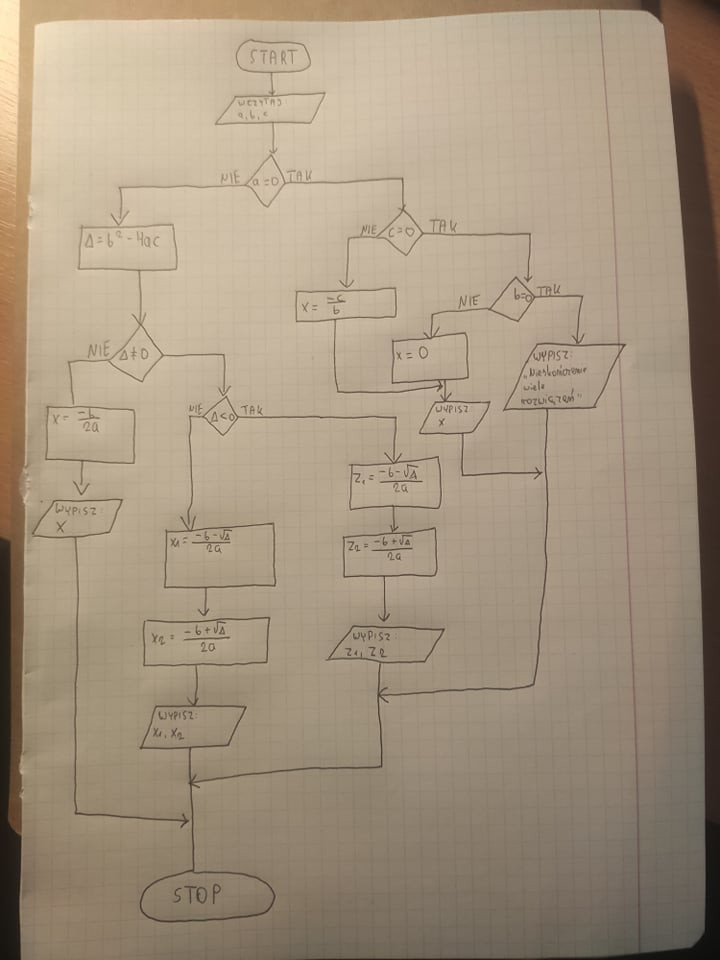
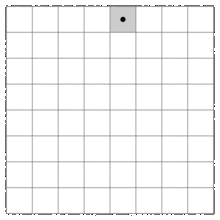
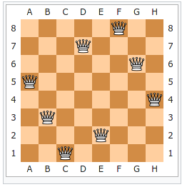
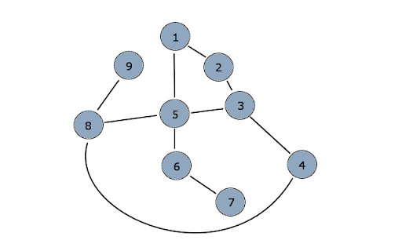
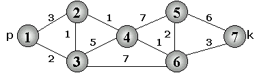

Algorytmy i struktury danych (wykłady, semester 1)
Prowadzący: dr inż. Mścisław Śrutek
Czym jest algorytm? 🤔
Można ją zapisać własnymi słowami, ale musi być zachowany poniższy sens:
skończony uporządkowany ciąg jasno zdefiniowanych czynności koniecznych do wykonania pewnego zadania
- język naturalny
- pseudokod
- schemat blokowy
- język programowania
- lista kroków
- proste (liniowe) lub rozgałęzione
- rekurencyjne, iteracyjne
- posiada pewne dane wejściowe i dane wyjściowe
- posiada złożoność (musi być w jakiś sposób złożony, jeśli coś przykładowo tylko drukuje dane z wejścia na wyjście, to nie jest algorytmem)
- skończony (nie może wykonywać się w nieskończoność!)
- określony deterministycznie [zawsze dla tego samego wejścia jest to samo wyjście; brak losowości]
Trochę wstępnych informacji
- LIFO (last in, first out)
- FIFO (first in, first out)
- liczby (całkowite, dziesiętne, dwójkowe)
- znaki (litery, ciągi liter)
- wskaźniki (wyznaczają adresy innych obiektów)
- rejestry procesora
- pamięć operacyjna (i plik wymiany)
- dyski twarde
- przechowywana jest w strukturach danych
- przetwarzana za pomocą algorytmów
Schemat blokowy
Rodzaje bloków występujących w schematach blokowych:
Uwaga prowadzącego: najlepiej rysować schematy blokowe w taki sposób, aby miały jeden początek i jeden koniec (aby nie było kilku bloków kończących)
Liczby zespolone
{kind=link}

{kind=link}
Struktury danych
- Tablice jednowymiarowe (wektory)
-
Tablice wielowymiarowe (macierze)
W macierzy najczęściej pierwszym indeksem jest wiersz, drugim kolumna (tak jak na matematyce) -
Stos
- Działa zgodnie z zasadą LIFO
- Ma funkcje Push i Pop
- Każdy element na stosie składa się z przechowywanej zmiennej + wskaźnika przechowującego kolejny element na stosie
-
Dodatkowe funkcje stosu:
- Top – przechowuje wskaźnik do szczytu stosu
- Przepełnienie - dla stosu o zadeklarowanej maksymalnej wielkości
- Stos pusty – sprawdza czy stos jest pusty
-
Kolejka
- Działa zgodnie z zasadą FIFO
- Liniowa struktura danych
- Elementy pobieramy z początku
- Nowe elementy wstawiamy na koniec
- Pierwszy element nazywamy głową, ostatni element nazywamy ogonem
-
Lista
- Liniowa struktura danych
- Lista to ciąg elementów, w którym każdy element pamięta swojego następcę i poprzednika
- Pozwala wstawiać elementy w dowolnym miejscu
- Lista umożliwia symulowanie zarówno kolejki, jak i stosu
-
Podstawowe funkcje listy:
- Search(L, x) – znajduje wskaźnik do elementu o kluczu x, bądź NULL jeśli nie ma elementu z kluczem
- Insert(L, x, w) – wstawia element o kluczu x w miejscu wskazanym przez w
- Delete(L, w) – usuwa element wskazywany przez w
- Min(L) – zwraca element o najmniejszym kluczu
- Max(L) – zwraca element o największym kluczu
-
"Zabawa w pociąg"
- Listę można zobrazować jako ciąg osób trzymających się za ręce. Każda osoba trzyma swojego lewego i prawego sąsiada
- W takiej strukturze możliwe jest dodawanie nowej osoby w dowolnym miejscu
- Możliwe jest też usuwanie osób z takiej listy (pociągu)
- Ważne jest wtedy, aby sąsiedzi uwzględnili zmianę i poprawili uchwyt rąk
-
Drzewo binarne
-
Węzeł reprezentowany za pomocą rekordów:
- klucz węzła
- wskaźnik do ojca
- wskaźnik do lewego syna
- wskaźnik do prawego syna
- Drzewo binarne ma korzeń (wierzchołek) i liście
- „Drzewo regularne” to takie, w którym każdy element ma albo 2 synów, albo 0
-
Węzeł reprezentowany za pomocą rekordów:
-
Kopiec (sterta, stóg, ang. heap)
- szczególny rodzaj drzewa, w którym wartości potomków węzła są w stałej relacji z wartością rodzica (najczęściej większosć/mniejszość)
- na przykład może występować relacja, że syn ma zawsze wartość mniejszą od ojca
-
Rekord
- Struktura danych typowa dla baz danych
- Struktura w której można przechowywać zmienne dowolnego typu (tzw. pola)
- Rekord powinien przechowywać dane na temat tego samego obiektu
-
Przykładowy rekord:
- REKORD STUDENT
- POLA IMIE, NAZWISKO, NR_INDEKSU, KIERUNEK, SEMESTR, WYDZIAŁ
Złożoność obliczeniowa algorytmów
- prosty kod
- łatwy do zrozumienia
- może być napisany w każdym języku programowania
- liczy się szybko
- potrzebuje niewiele pamięci
- zawsze daje poprawne wyniki
Przy czym trzeba pamiętać, że idealny algorytm nie istnieje :)
-
pamięć
- liczba zmiennych
- ilość miejsca potrzebna dla danych
-
czas
- liczba instrukcji
- liczba operacji arytmetycznych
- liczba wywołań procedury
Najczęściej bardziej skomplikowany algorytm może być albo szybki, albo zajmować mało pamięci - trudno pogodzić oba :(
Złożoność czasowa to ilość czasu niezbędnego do rozwiązania problemu w zależności od liczby danych wejściowych.
Złożoność czasowa jest zatem pewną funkcją, która jako argument przyjmuje liczbę danych wejściowych (n), na przykład T(n) = 2n2 + n + 5
Złożoność czasową wyrażamy albo w jednostkach czasu, albo w liczbie operacji, które należy wykonać dla n danych, aby otrzymać rozwiązanie problemu. Zwykle używamy liczby operacji, rzadziej czasu.
Licząc liczbę operacji w schemacie blokowym, zwykle pomijamy: instrukcje stopu i startu, instrukcje wejścia/wyjścia
Złożoność pamięciowa to liczba komórek pamięci, która będzie zajęta przez dane i wyniki pośrednie tworzone w trakcie pracy algorytmu. Wyrażamy ją zwykle w bajtach (obliczając to na zaliczeniu trzeba samemu wybrać ile bajtów będą zajmować poszczególne zmienne).
- złożoność minimalna (optymistyczna) - dla najbardziej korzystnego zestawu danych
- złożoność średnia - zużycie zasobów dla typowych (losowych) danych
- złożoność maksymalna (pesymistyczna) - dla najbardziej niekorzystnego zestawu danych
Sortowanie przez wstawianie
Sortowanie jest podobne do układania kart pobieranych z talii.
Bierzemy pierwszą kartę z talii.
Pobieramy kolejne, aż do wyczerpania talii.
Każdą pobraną kartę porównujemy z kartami, które już trzymamy w ręce i szukamy dla niej miejsca przed pierwszą kartą starszą. Gdy znajdziemy takie miejsce, rozsuwamy karty i nową wstawiamy na przygotowane w ten sposób miejsce. Jeżeli nasza karta jest najstarsza (najmłodsza), to umieszczamy ją na samym końcu.
from random import randrange
list_size = 10
my_list = [randrange(1, 100) for _ in range(1, list_size + 1)]
for i in range(1, list_size):
for j in reversed(range(0, i)):
if my_list[j+1] < my_list[j]:
my_list[j+1], my_list[j] = my_list[j], my_list[j+1]
Sortowanie przez wybór
- Szukamy w zbiorze elementu najmniejszego i wymieniamy go z elementem na pierwszej pozycji.
- Znów wyszukujemy element najmniejszy i wymieniamy go z elementem na drugiej pozycji.
- I tak dla każdego elementu.
from random import randrange
list_size = 10
my_list = [randrange(1, 100) for _ in range(1, list_size + 1)]
for i in range(0, list_size):
min_index, min_value = i, my_list[i]
for j in range(i + 1, list_size):
if my_list[j] < min_value: # aby zrobić sortowanie malejące, zmieniamy tu znak na >
min_index, min_value = j, my_list[j]
my_list[i], my_list[min_index] = my_list[min_index], my_list[i]
Sortowanie przez zamianę
- Jest to sztandarowy przykład algorytmu działającego "przez zamianę".
- Polega na stopniowym zamienianiu miejscami sąsiadujących elementów, tak długo aż zbiór danych zostanie posortowany.
from random import randrange
list_size = 100
my_list = [randrange(1, 100) for _ in range(1, list_size + 1)]
for i in range(0, list_size - 1):
for j in range(0, list_size - i - 1):
if my_list[j] > my_list[j + 1]:
my_list[j], my_list[j + 1] = my_list[j + 1], my_list[j]
from random import randrange
list_size = 100
my_list = [randrange(1, 100) for _ in range(1, list_size + 1)]
for i in range(0, list_size - 1):
has_swapped = False
for j in range(0, list_size - i - 1):
if my_list[j] > my_list[j + 1]:
my_list[j], my_list[j + 1] = my_list[j + 1], my_list[j]
has_swapped = True
if not has_swapped:
break
Sortowanie - c.d.
-
Quick sort
- algorytm zrealizowany na podstawie reguły "dziel i zwyciężaj"
- stopniowo dzielimy tablicę na dwie mniejsze części, w każdej części przenosząc liczby większe i mniejsze na jedną ze stron
- w procesie przenoszenia, środkowy element nazywamy "pivotem"
-
Shell sort
- Autor algorytmu zauważył, że algorytmy sortowania "przez zamianę" działają lepiej, gdy przekazujemy im do posortowania zbiór względnie posortowany.
- Sortowany zbiór dzielimy na mniejsze podzbiory, w których każdy element jest oddalony od innego o równą odległość. Powstałe zbiory sortujemy sortowaniem przez zamianę.
- Następnie tworzymy nowe zbiory, zmniejszając odległość między elementami - a p potem również sortujemy je "przez zamianę"
- Powtarzamy to tak długo, aż odległość pomiędzy poszczególnymi elementami podzbiorów nie wyniesie 1.
- Sortowanie drzewiaste/stogowe
Algorytmy iteracyjne & algorytmy rekurencyjne
Algorytm rekurencyjny polega na tym, że obiekt składa się częściowo z samego siebie.
Algorytm iteracyjny to taki, w którym zastosowano pętle.
Przykładowy problem, który można rozwiązać rekurencją. Trzeba znaleźć taką ścieżkę dla skoczka szachowego, aby odwiedził on każde pole - oraz aby każde pole odwiedzone zostało tylko jeden raz.
Przykładowy problem, który można rozwiązać rekurencją. Trzeba w taki sposób rozstawić 8 hetmanów na planszy szachowej, aby żaden z nich nie mógł zbić innego.
Grafy
Graf – struktura składająca się z wierzchołków (oznaczanych V) i gałęzi między nimi (oznaczanych E).
Ważne! Graf nie jest algorytmem!
- Graf nieskierowany – gałęzie są dwukierunkowe
- Graf skierowany – gałęzie są jednokierunkowe
- Graf Eulera (eulerowski) to taki graf, w którym można skonstruować cykl Eulera.
- Cykl Eulera to cykl, który przechodzi przez każdą krawędź grafu dokładnie raz i wraca do punktu wyjściowego.
- Ścieżka Eulera to ścieżka przechodząca przez każdą krawędź dokładnie raz (ale niekoniecznie wracająca do punktu wyjścia).
- Aby dało się skonstruować cykl Eulera wszystkie wierzchołki muszą mieć parzysty stopień, a żeby dało się skonstruować ścieżkę Eulera - wszystkie za wyjątkiem co najwyżej dwóch.
- Cykl Hamiltona to cykl, który przechodzi przez każdy wierzchołek grafu dokładnie raz i wraca do punktu wyściowego.
- Ścieżka Hamiltona to ścieżka, która przechodzi przez każdy wierzchołek grafu dokładnie raz (ale niekoniecznie wracająca do punktu wyjściowego).
- Badaniem minimalnego cyklu Hamiltona dla grafu ważonego zajmuje się problem komiwojażera.
- Dokładny - polega na porównaniuze sobą każdej możliwej ścieżki; bardzo trudny w realizacji, bo w przypadku większej ilości miast trzeba będzie wykonać gigantyczną liczbę porównań
-
Heurystyczny - algorytmy o wiele szybsze, ale dające mniej dokładny wynik
- minimalne drzewo rozpinające
- najbliższy sąsiad
- Jeśli krawędź łączy dwa wierzchołki, to jest z nimi incydentna. W grafach skierowanych rozróżnia się początkowy i końcowy wierzchołek krawędzi.
- Pętla własna - krawędź łącząca wierzchołek z samym sobą
- Ścieżka lub droga - (w grafie skierowanym) sekwencja krawędzi taka, że koniec jednej krawędzi jest początkiem następnej
- Stopień wierzchołka to liczba wychodzących z niego krawędzi.
- Stopień grafu to najwyższy stopień wierzchołka występujący w danym grafie. .
- Graf regularny stopnia r to graf w którym wszystkie wierzchołki mają stopień r.
- Długością ścieżki nazywamy liczbę należących do niej krawędzi
-
lista sąsiedztwa
wypisujemy listę wierzchołków, oraz jakie wierzchołki są do nich połączone
-
macierz sąsiedztwa
macierz o wymiarze liczba_wierzchołków x liczba_wierzchołków
na przecięciu dajemy 1 jeśli są połączone i 0 jeśli nie są
-
lista krawędzi
wypisujemy po kolei jakie mamy krawędzie
-
macierz incydencji [przy grafach skierowanych]
macierz o wymiarze V*E
jeśli krawędź wychodzi z danego wierzchołka, to w odpowiedniej kolumnie wpisuje się -1
jeśli do niego wchodzi +1
jeśli wierzchołek nie jest połączony 0
jeśli to pętla własna, 2
-
metoda wzdłuż
algorytm przechodzi wybraną ścieżką aż do jej całkowitego wyczerpania
domyślnie wszystkie wierzchołki mają status „nieodwiedzony”, a działanie algorytmu stopniowo nadaje wierzchołkom status „odwiedzony”.
-
metoda wszerz
procedura porusza się wszerz grafu, aby odwiedzić wszystkich nieodwiedzonych sąsiadów (tworzy jakby gwiazdę)
Algorytmy które trzeba znać
Algorytm szukania "najkrótszej ścieżki" pomiędzy punktem początkowym a końcowym. Przez najkrótszą ścieżkę rozumie się taką ścieżkę, której suma wag jest możliwie jak najniższa.
Jego matematyczny zapis polega na przeanalizowaniu każdego wierzchołka - przesuwając się wzdłuż grafu każdemu wierzchołkowi przypisujemy liczbę oznaczającą aktualny koszt dotarcia do tego wierzchołka. Na końcu należy na podstawie tych wyznaczonych liczb odczytać właściwą ścieżkę.
Są trzy drążki, trzeba przenieść krążki z drążka 1 na drążek 3.
Nie można brać więcej niż jednego krążka na raz, nie można kłaść małego na duży.